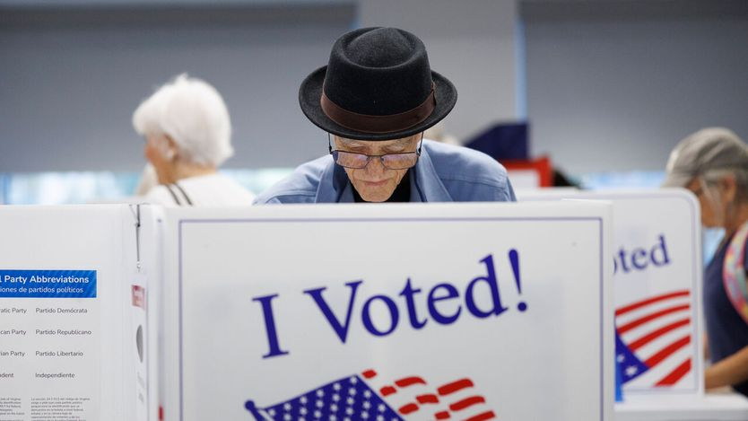

美国选举官员已为麻烦做好准备
America’s election officials are ready for trouble
特朗普没能改掉投票规则，但城市与各州仍在为各种“小动作”备战

- 距11月3日中期选举不到一个月，亚利桑那等地的选举办公室已把例行“桌面推演”升级为全流程演练：火灾、断电、炸弹威胁，甚至联邦执法人员突然出现在投票站该怎么应对，都要拿出B、C、D预案。
- 选举由各州而非联邦政府主办，今年国会与最高法院挡下了特朗普改写投票程序的多次尝试；但联邦机构已从“帮手”变成“变量”，网络安全共享机制退出、联邦调查局也不再设选举指挥中心。
- 最坏的设想是选票或投票机被“接管”：一旦保管链条断裂，就无法证明选票未被动手脚。科罗拉多已要求县书记员全程留痕，亚利桑那一些县的律师则备好了限制令。
- 只有一半美国人相信中期选举会自由公正。参议院控制权可能取决于一两个计票极慢的州，计票拖长或起争议时，最稀缺的恰恰是候选人的耐心与克制。
在亚利桑那州弗洛伦斯（Florence）——距凤凰城约一小时车程——一个晴朗的日子里，当地投票中心的工作人员正在做“桌面推演”，这是对“选举地狱”备训的委婉说法。演练的要点是设想各种灾难：火灾、断电、炸弹威胁，然后拿出B、C、D预案。官员们历来都会做些末日准备，但今年的演练更彻底，威胁清单也更长。比如：如果联邦执法人员出现在投票站，该怎么办？
工作人员逐条过流程。司法部派出的监督员只要有正式函件就可以留在现场——事实上联邦政府已表示将向全国派出1000名监督员。其他任何执法人员必须撤离，除非他们本人是来投票的；亚利桑那州法律规定投票站周边75英尺（约25米）内为隔离区。“如果他们拒绝离开，那就从推演变成真事了，”皮纳尔县（弗洛伦斯是该县县治）记录官办公室的一名选举工作人员说。换句话说：叫警长来。
皮纳尔县是共和党票仓，其中一部分位于亚利桑那州第六国会选区——11月3日中期选举中几十个胜负难料的众议院选区之一。我们的预测是民主党将夺回众议院，也可能拿下参议院。真正让人不安的问题是：特朗普可能使出什么招数，来颠覆选举的合法结果？
他试图推翻2020年败选结果的努力，让所有人都看清了美国分散式选举体系中的诸多压力点，以及他可能为施压走到哪一步。到目前为止，他今年多次出手干预都收效甚微——国会和最高法院拦下了他改写投票程序的各种尝试。选举由各州而非联邦政府主办，各州规则与往届基本一致。但行政部门已从维护选举公正的力量，变成侵蚀它的力量，而11月，这套体系将再次接受考验。
有些变化不是主动干预，而是撤走帮手。去年，网络安全和基础设施安全局（CISA）停止为地方承担参加网络威胁共享服务的费用，该项目成员数量因此减少三分之二。CISA前官员杰夫·黑尔（Geoff Hale）说，结果是网络攻击更容易蔓延。“如果一个辖区遭到攻击并被攻破，或者自己把攻击挡了回去，只要他们不共享这次攻击的信息，其他选举辖区就同样脆弱。”类似地，据报道联邦调查局也没有计划启动选举指挥中心——过去几年，该中心负责监控威胁并与地方执法部门协调。
但选举管理者也越来越把联邦政府视为威胁，代表地方政府打官司的公益诉讼组织公共权利项目（PRP）的乔纳森·米勒（Jonathan Miller）说。今年早些时候，司法部表示将起诉那些让非公民投票的官员。这类选民舞弊极其罕见，但“非公民投票”的幽灵恰恰是“选举被窃”神话的燃料。正因如此，MAGA活动人士声称他们希望把移民执法搬到投票站。
这种存在本身就是非法的：联邦法律禁止政府官员向投票站派遣武装人员。PRP已代表丹佛市起诉国土安全部，力求在选举日之前预先阻止任何类似做法。特朗普政府称无意在投票站巡逻，但可能会采取有针对性的行动，比如对涉嫌非法移民者送达逮捕令。民主党担心，投票站附近的执法存在会压低少数族裔的投票率，而少数族裔往往倾向民主党。加州大学圣迭戈分校的一项调查显示，三分之一的拉美裔表示，尽管自己是公民，仍预计会在投票站被盘问；近一半人预计会遇到某种形式的恐吓。
选举专家设想的噩梦场景是：特朗普可能试图夺取投票设备或选票。那将打断“保管链条”——即规定谁能接触选票、选票流向何处的管控机制，用以确保每一张选票都有据可查。保管链条一旦断裂，就很难判断选票是否被做过手脚。“我会非常不安，不敢认证那些选票，”亚利桑那州马里科帕县前记录官斯蒂芬·里彻（Stephen Richer）说。“然后你就开始走上那条黑暗的路：是不是得重新选举？”
过去选举中的两起事件，让民主党人警惕起这种可能性。今年1月，联邦调查局突袭了佐治亚州富尔顿县的一个选举办公室，带走2020年的材料。3月，加州里弗赛德县的共和党籍警长查德·比安科（Chad Bianco）扣押了去年全州公投中投出的选票。联邦调查局和比安科在申请搜查令时都引用了不实信息。
11月会出现类似的套路吗？上述两起事件都发生在选举结束之后，而不是选举进行之中。本月，特朗普在白宫接待了蒂娜·彼得斯（Tina Peters）。这位前县书记员因在2020年让另一位“选举否认者”未经授权接触投票机而入狱，随后被科罗拉多州民主党籍州长赦免。据报，她在华盛顿之行中向特朗普推销了一项今年11月夺取选票的计划。另一位MAGA“麻烦制造者”埃德·马丁（Ed Martin）向采访者描述了他们的会面，并对中期选举给出这样一句隐晦的评语：“总统将不得不做他必须做的事。”
州和地方官员高度戒备。科罗拉多州现在要求县书记员记录一切，以便法官一旦下令从其保管中调走材料时有清晰记录。亚利桑那州一位县官员说，她已确保投票机供应商备足存货，以防联邦政府没收设备。位于亚利桑那州与墨西哥边境的皮马县记录官加布里埃拉·卡萨雷斯-凯利（Gabriella Cázares-Kelly）说，当地律师已起草好限制令，以备移民执法人员出现。“他们会插上几样设备，按下打印，然后拿着文件一路跑到等着的法官面前。”
这类情形仍极不可能发生。但官员们还得应付“选举否认”活动人士——他们惯常提交骚扰性的公共记录查询，并对选民登记提出质疑。在佐治亚等摇摆州，他们甚至成功拿下了地方选举委员会中的席位，其中一些人瞄准了今年11月的全州公职。亚利桑那州可可尼诺县的埃斯利尔·穆斯塔（Eslir Musta）说，在管理者为各种“假如”情形做准备的同时，把选举的基本流程做对仍是一项绝不轻松的功课。对他来说，这意味着要备好一支骡队，去给住在大峡谷底部的160名选民送选票。
只有一半美国人告诉民调机构，他们预期中期选举会自由公正。两院席位差距越小，11月可被利用的不确定性就越大。如今在胶着的选战中，诉讼和重新计票已成常态。今年，参议院控制权可能取决于一两个州，其中还包括阿拉斯加这样以计票慢著称的地方。漫长或有争议的计票，需要候选人拿出耐心和克制——而这偏偏不是特朗普为人所知的特质。■